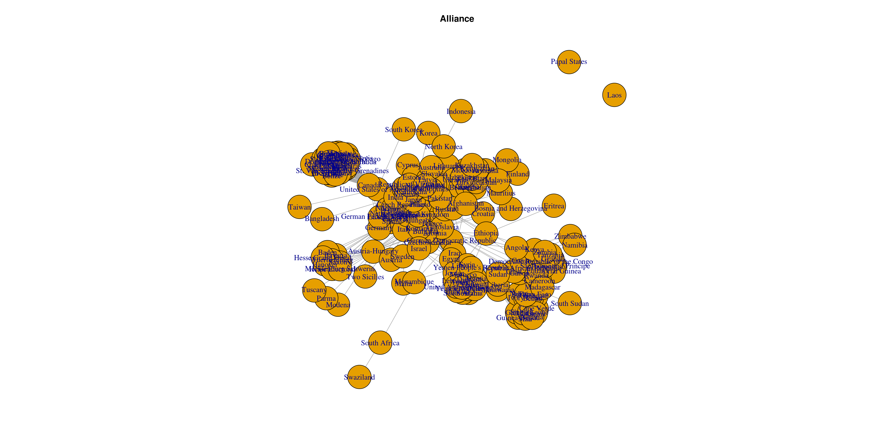
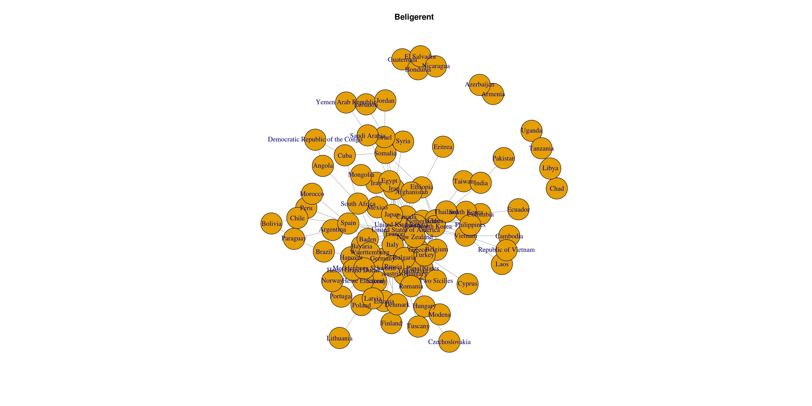
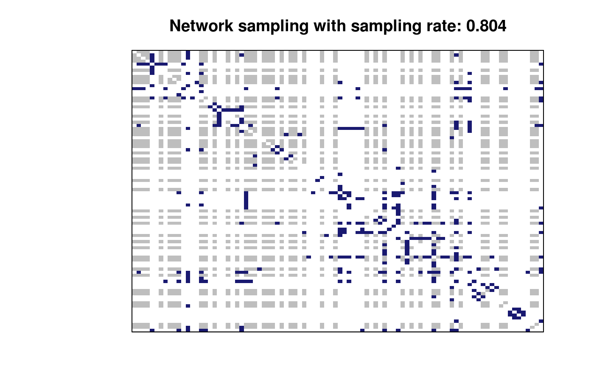
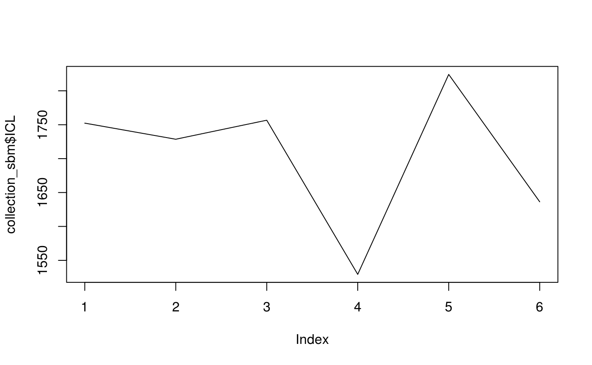
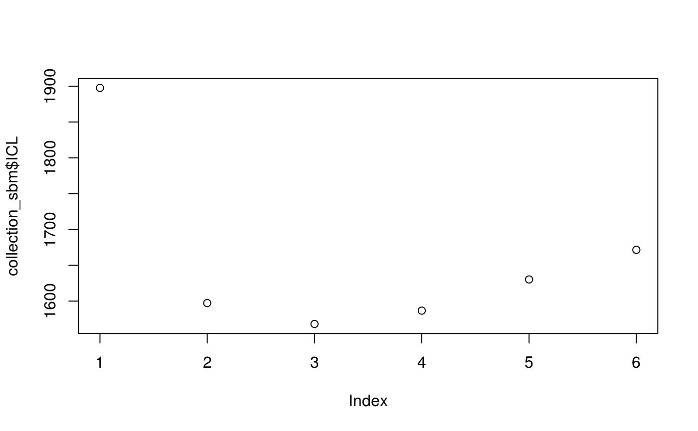
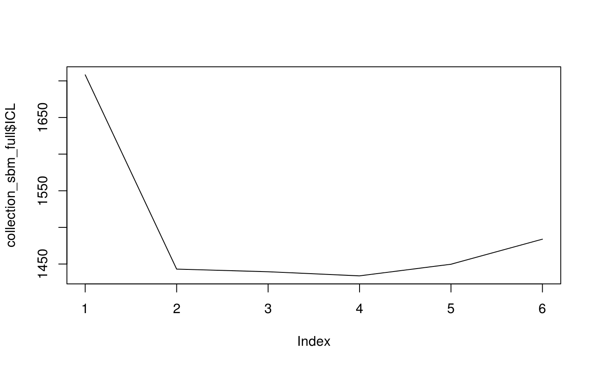
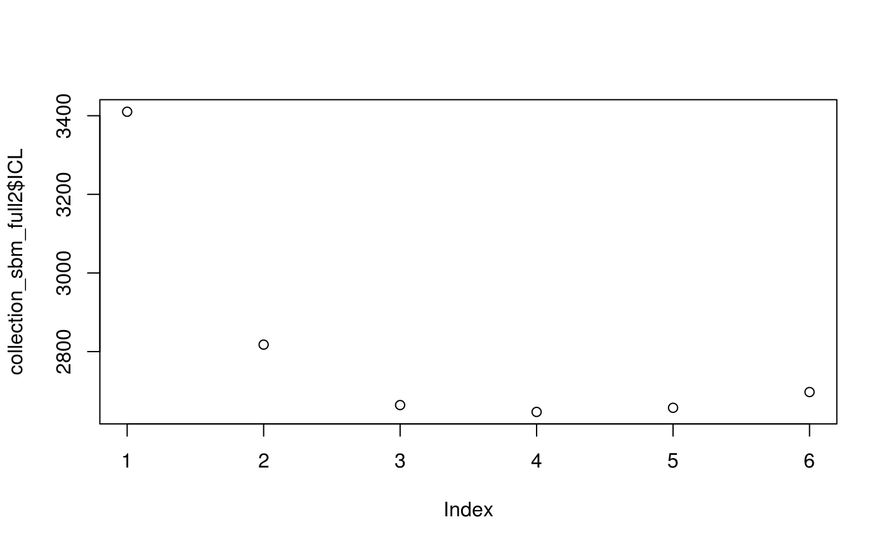

vignettes/introdution-to-misssbm.Rmd
introdution-to-misssbm.Rmd##
## Attaching package: 'igraph'## The following objects are masked from 'package:stats':
##
## decompose, spectrum## The following object is masked from 'package:base':
##
## union##
## Attaching package: 'missSBM'## The following objects are masked from 'package:stats':
##
## simulate, smooth## The following object is masked from 'package:base':
##
## sampleThe war_graphs dataset comes with the missSBM package:
This dataset contains a list of two networks where the nodes are countries and an edge in network beligerent means that the two countries have been at least once at war between years 1816 to 2007 while an edge in network alliance means that the two countries have had a formal alliance between years 1816 to 2012. The network beligerent have less nodes since countries which have not been at war are not considered. These two networs were extracted from http://www.correlatesofwar.org/ (version 4.0 for war data see Sarkees, Meredith Reid and Frank Wayman (2010). Resort to War: 1816 - 2007. Washington DC: CQ Press., version 4.1 for formal alliance see Gibler, Douglas M. 2009. International military alliances, 1648-2008. CQ Press.).


Some data may be missing for some countries in the sense that data were collected comprehensively for a subset of countries and for the other countries we only observe their edges with the first subset and not within them. More precisely, we can assume that the sampling is node-centered, therefore there is block of missing data on the diagonal of the adjacency matrix.
sampledNet_war <- war_graphs$beligerent %>%
as_adj(sparse = FALSE) %>% missSBM::sample(sampling = "node", parameters = .6)
plot(sampledNet_war)
vBlocks <- 1:6
collection_sbm <- sampledNet_war$adjMatrix %>%
missSBM::estimate(vBlocks = vBlocks, sampling = "node", clusterInit = "spectral")##
##
## Adjusting Variational EM for Stochastic Block Model
##
## Imputation assumes a 'node' network-sampling process
##
## Initialization of model with 1 blocks.
Initialization of model with 2 blocks.
Initialization of model with 3 blocks.
Initialization of model with 4 blocks.
Initialization of model with 5 blocks.
Initialization of model with 6 blocks.
## Performing VEM inference for model with 1 blocks.
Performing VEM inference for model with 2 blocks.
Performing VEM inference for model with 3 blocks.
Performing VEM inference for model with 4 blocks.
Performing VEM inference for model with 5 blocks.
Performing VEM inference for model with 6 blocks.
##
## Smoothing ICL
## Going forward +++++
Going backward +++++
Going forward +++++
Going backward +++++

##
## 1 2 3
## 10 73 9We compare with clusterings obtained with the fully observed network.
collection_sbm_full <- war_graphs$beligerent %>%
as_adj(sparse = FALSE) %>%
missSBM::estimate(vBlocks = vBlocks, "node", clusterInit = "hierarchical", cores = 2, trace = TRUE)##
##
## Adjusting Variational EM for Stochastic Block Model
##
## Imputation assumes a 'node' network-sampling process##
## Smoothing ICL
## Going forward +++++
Going backward +++++
Going forward +++++
Going backward +++++

## [1] TRUE## [1] FALSEcollection_sbm_full2 <- test %>%
missSBM::estimate(vBlocks = vBlocks, "node", clusterInit = "spectral", cores = 2, trace = TRUE)##
##
## Adjusting Variational EM for Stochastic Block Model
##
## Imputation assumes a 'node' network-sampling process##
## Smoothing ICL
## Going forward +++++
Going backward +++++
Going forward +++++
Going backward +++++
Going forward +++++
Going backward +++++
Going forward +++++
Going backward +++++

table(
collection_sbm$bestModel$fittedSBM$memberships,
collection_sbm_full$bestModel$fittedSBM$memberships
)##
## 1 2 3 4
## 1 0 7 0 3
## 2 26 0 47 0
## 3 3 3 1 2